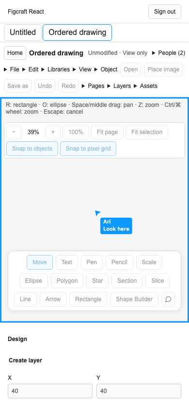

Live presence verification
Pinned native source a2e87433. Local production build, 11 November 2026.
- Native signals and editor state
- A separately compiled native protocol produced all 14 cases in the signal fixture. Seven focused checks cover Unicode, limits, precise identifiers, 33 ms coalescing, subscription recovery, stale generations, expiry, page-local following and the four native cursor, chat, follow and spotlight commands. Camera movement leaves drawing history intact.
- Private delivery
- The real local provider delivered a private broadcast to a signed-in viewer. A replaced tab lost access. Its successor kept its client ID, acquired a later generation and became the only recipient. A forged login, wrong file and revoked connection failed. The event created no journal sequence or retained broadcast row. The generated migration needed an explicit revoke of the public wrapper’s default anon and authenticated grants. Eight new SQL assertions now guard the ACL.
- Desktop and phone
- A second account joined on a 390 px viewport, followed Ari, read the remote pointer pixel in Ari’s assigned colour and saw the cursor chat. The viewer started and stopped spotlighting. The drawing stayed unmodified and the test observed zero edit submissions. The centred phone workflow passed in 19.4 seconds.
- Local gates
- 4,527 pure tests, 389 SQL assertions and 25 provider integrations passed. Strict types and both builds passed. Local security advisers found no issues, declarative comparison found no schema changes and npm audit found zero vulnerabilities. The preceding comment build passed 361/361 Chromium workflows. The cumulative run on the presence build has 362 workflows.
- Outstanding parity checks
- Verify the remote selected-text overlay, inactive and reconnected tabs in two browsers, native session inspection, collision/typing feedback and delayed or rejected offline reconciliation before marking roadmap row 14 complete.

Live owner pointer and chat, centred in the guest’s viewport.